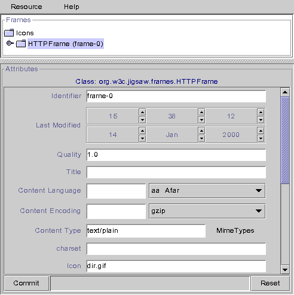
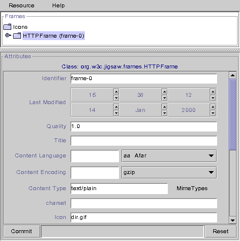

In this section, the Jigsaw2.0 version of the indexing scheme will be
presented. The Jigsaw1.0 scheme is easy to find out as it is much simpler than
the 2.0 one (no protocol frames).
Goal of an indexer
The main goal of an indexer is to create and setup some resource
automatically. The resources can be created depending on their name or their
extension. Once the resource has been created, the indexer is also in charge
of attaching the right frames to this resource, like the HTTP frame, the
filters and so on.
Description of an indexer
- Class and attributes of an indexer.
- Class:
- Usually, the indexer's class is
org.w3c.tools.resources.indexer.SampleResourceIndexer
- identifier
- The name of the indexer, ex: "icons"
- Last-modified
- Unused, but resent as, internally, it is a resource.
- super-indexer
- The name of the parent indexer used when the current indexer
fails to index. By default, the super indexer is the "default"
indexer.
- The sons of an indexer
- directories
- Used to index files matching exactly a name, mainly used to index
directories. You can specify that an "Icons" directory will always
be negotiable, for example. The default name (ie: matching all
directory names) is "*default*"
- extensions
- Used to index files with a specific extension. For example,
"html" is a FileResource with an HTTPFrame set to give the
"text/html" content type to this file. Then all the "foo.html"
files will be indexed as "text/html" type object when accessed
by HTTP. The default extension (ie: matching all the extension
names) is "*default*". To index files with no extensions, you must
use the name "*noextension*".
Setting up the indexer
We will use a small example. The indexer will create all directories named
"Icons" as a normal DirectoryResource, but using "icons" as its indexers. It
means that all the Icons directories and their subdirectories will be indexed
with "icons" instead of "default". Along with that, we will define a new
extension "mpg" as a "video/mpeg" object.
- Open a jigadmin window
- Go to the server you want to add the indexer to (usually http-server),
double click on the "indexers" node. On the right side, you must
see the resource editor popup

- Create an indexer. To do so, select "Add Resource" in the
popup menu (right click on "Indexers" node), put a name in the
identifier textfield (ex: "testindexer"), then, using the
pulldown menu, select the class of indexer you want to
use. The common indexer is
org.w3c.tools.resources.indexer.SampleResourceIndexer click on
the "Ok" button and you are all set for the next step:
- You now have a "testindexer" node. Open this node and you will see the
two directories "directories" and "extensions", as described above. The
Resource editor shows the super-indexer field. Let it blank as there is
no specific indexer to call before asking the default indexer if this
one fails.

- Right click on "directories", then select "Add Resource" in
the popup menu. Type "Icons" in the indentifier textfield, and select
org.w3c.tools.resources.DirectoryResource using the pull-down
menu. It means that all the directories named "Icons" will be created as
a DirectoryResource. You have now to configure this resource.


- Double-click on the new "Icons" directory under the
"directories" node, the resource editor appears first. We want
to change the indexer on this resource, so select the "Icons"
node (in the resource editor) to show the right helper. You
have now the attributes, amongst them, the indexer. Select "icons" using
the option menu, then click on "Commit" to confirm your changes. BEWARE!
The indexer is not yet completely setup, as this resource can't be
accessed in any way! You need to add a ProtocolFrame to allow one
protocol to access this resource. To do so, select "Add Frame"
in the main menu of the resource editor or using the popup menu.
Select the most basic protocol frame:
org.w3c.jigsaw.frames.HTTPFrame and add it to the resource.
Click now in the small tree browser below, HTTPFrame (frame-0)
should appear. Click on it and you will be able to configure the
HTTPFrame (which looks like an old Jigsaw-1.0 Resource) set the icon to
dir.gif to enhance it.
 

- Now you have to create the new extension. You must use the same
process as above, except for some details. Add the "mpg" resource with
the org.w3c.tools.resources.FileResource class to the
"extensions" directory. Then add an HTTPFrame to it, open the "mpg" node
in the little tree browser. Change the mime type, by selecting the right
one (video/mpeg) in the content-type editor. Add movie.gif as the
default icon for directory listing, commit.

- You are all set now, don't forget to save your changes using the
control resource of the server. You can now use this indexer.
Of course this is an example, if you want to add an extension for the whole
server, the best way is to add it directly in the default indexer. Another
thing, it is better to use
org.w3c.jigsaw.resources.DirectoryResource
than
org.w3c.tools.resources.DirectoryResource, just to check if
you read ALL the documentation ;)
The Content Type Indexer
In some cases the file extension is not the only criteria, for exemple when a
PUT request occurs the indexer should use the Content-Type header comming with
the request (if there is a content-type header). This is the job of the
Content Type Indexer.

The Content Type Indexer (
org.w3c.jigsaw.indexer.ContentTypeIndexer),
has one more child, the
content-types node. The associations between
mime types and resources are stored in this new child.
Since 2.0.2 the ContentTypeIndexer accept generic mime types like
text:*, *:xml or even *:*. For example, if you define
text:* as a FileResource using a HTTPFrame (with a content-type set to
*none*) all content types like text/html, text/plain, text/xml will be
accepted.
Note: As you can see in the screenshot, the mime types stored in the
indexer are not "real" mime types, the '/' has been replaced by a
':'. We decided that because the '/' can create some
conflicts with the URLs in Jigsaw.